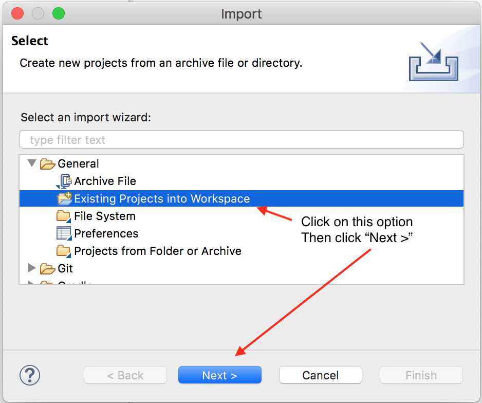
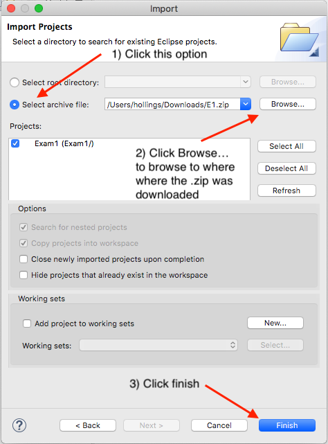

Importing an Eclipse Project from a Zip File
Step 1 - Download E1.zip
E1.zip contains the starter Eclipse project for the computing part of the exam
Click on the following link to download E1.zip - be sure to tell your browser to put it in a place you can later find it
E1.zip
Step 2 - Import E1.zip into Eclipse
Start up Eclipse
From Eclipse's menu bar choose: File | Import...
This will bring up the Import dialog seen to the right
From the Import dialog
1st choose: "Existing Projects into Workspace"
then choose: Next >

From the next dialog choose: "Select archive file:" radio button
Then click the Browse button and browse to the location where you put your E1.zip download
Finally, click Finish
Now you can get to work on your project
